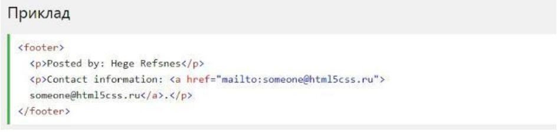

HTML5 Семантичні елементи
Семантичний елемент чітко описує його значення як для браузера, так і для розробника.
Приклади не семантичних елементів: <div> і <span> - нічого не говорить про його вміст.
Приклади семантичних елементів: <form>, <table> і <article>- чітко визначає його зміст.
До гориПідтримка браузерів
Семантичні елементи HTML5 підтримуються у всіх сучасних браузерах. Крім того, ви можете "навчити" старих браузерів, як обробляти "невідомі елементи".
Прочитайте про це в підтримці браузера HTML5 .
До гориНові семантичні елементи в HTML5
HTML5 пропонує нові семантичні елементи для визначення різних частин веб-сторінки:
- <section>
- <article>
- <header>
- <footer>
HTML5 <section> елемент
Елемент <section>визначає розділ в документі.
Згідно з документацією W3C HTML5: "розділ представляє собою тематичну угруповання контенту, зазвичай з заголовком".
Домашня сторінка зазвичай може бути розділена на розділи для ознайомлення, змісту і контактної інформації.
До гориHTML5 <article> елемент
Елемент <article>визначає незалежний, автономний вміст.
Стаття повинна мати сенс самостійно, і вона повинна мати можливість читати його незалежно від іншої частини веб-сайту.
Приклади того, де можна використовувати елемент <article>:
- Повідомлення на форумі
- Повідомлення на блозі
- Газетна стаття
HTML5 <header> елемент
Елемент <header>задає заголовок для документа або розділу.
Елемент <header>повинен використовуватися в якості контейнера для вступного змісту.
В одному документі може бути кілька елементів <header>.
У наступному прикладі визначається заголовок для статті:
До гориHTML5 <footer> елемент
Елемент <footer>вказує нижній колонтитул для документа або розділу.
Нижній колонтитул зазвичай містить автора документа, інформацію про авторське право, посилання на умови використання, контактні дані і т.д.
В одному документі може бути кілька елементів <footer>.
 До гори